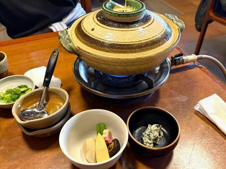
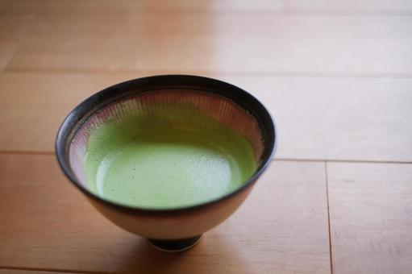
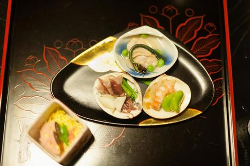
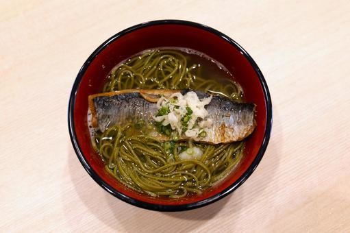
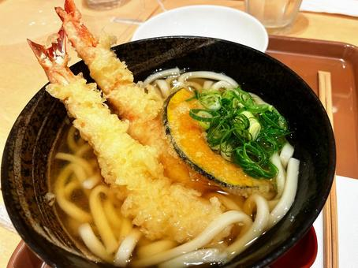
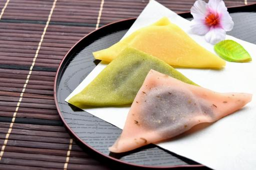
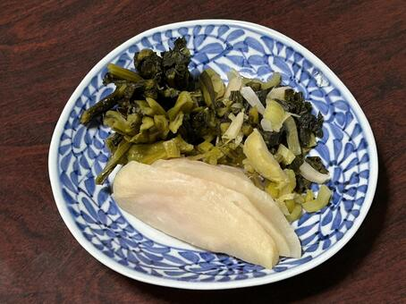
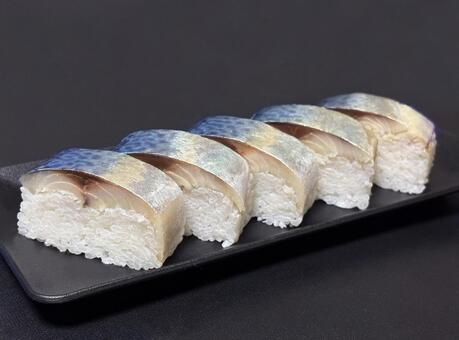
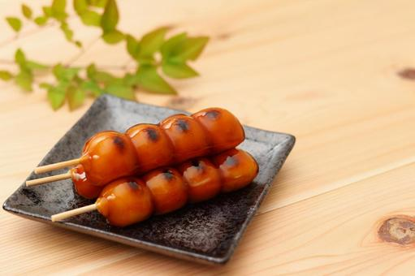
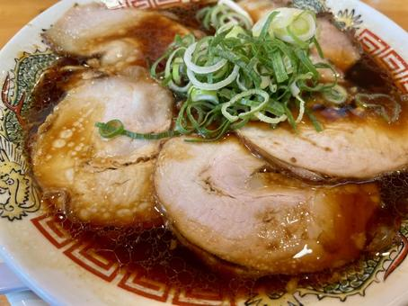

観光で食べたい京都ならではの名物料理
京都には歴史ある寺社だけでなく、 長い年月をかけて育まれてきた食文化があります。 上品な出汁を使った料理から、 宇治抹茶を使ったスイーツまで、 京都でしか味わえない魅力がたくさんあります。 今回は観光でぜひ食べたい 京都グルメおすすめ10選をご紹介します。

京都を代表する伝統料理。特に南禅寺周辺では名物として親しまれています。

宇治抹茶を使ったパフェやアイスは観光客にも大人気です。

季節の食材を活かした京都ならではの贅沢な料理です。

甘辛く煮たにしんと出汁の相性が抜群の京都名物です。

柔らかい麺と優しい出汁が特徴です。

京都土産の定番。もちもち食感が魅力です。

千枚漬けやしば漬けなど、京都ならではの味が楽しめます。

京都の伝統的な郷土料理として愛されています。

香ばしい団子と甘辛いタレが絶妙です。

実は京都はラーメン激戦区。地元でも人気のグルメです。
京都駅周辺だけでなく、 祇園・嵐山・伏見・宇治など エリアごとに特色あるグルメがあります。 観光スポット巡りとあわせて、 ぜひ京都ならではの味を楽しんでみてください。
← トップページへ戻る